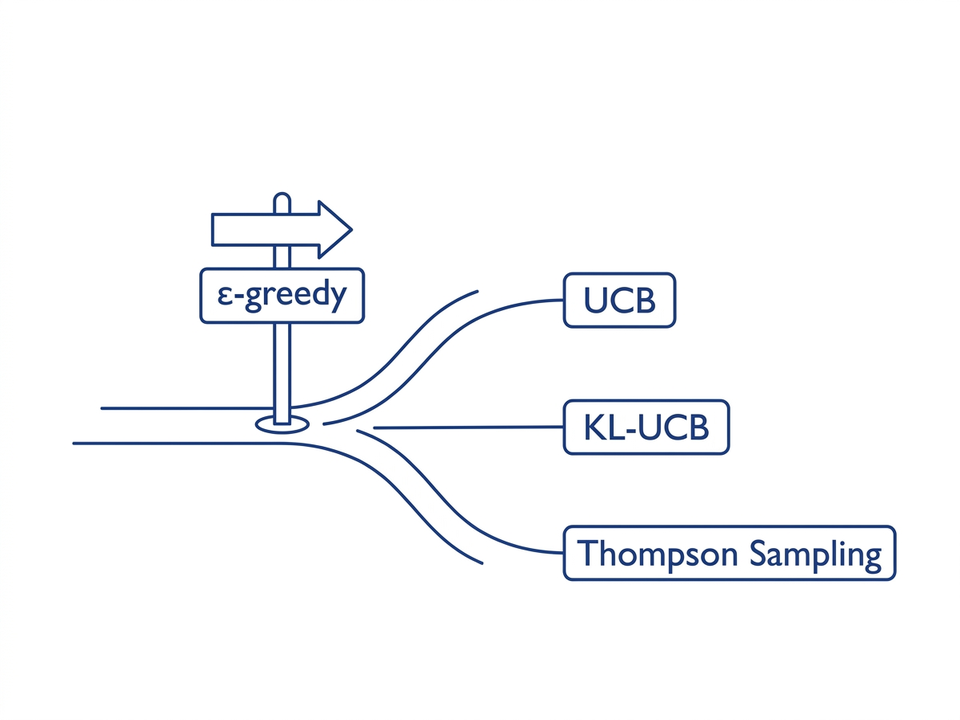
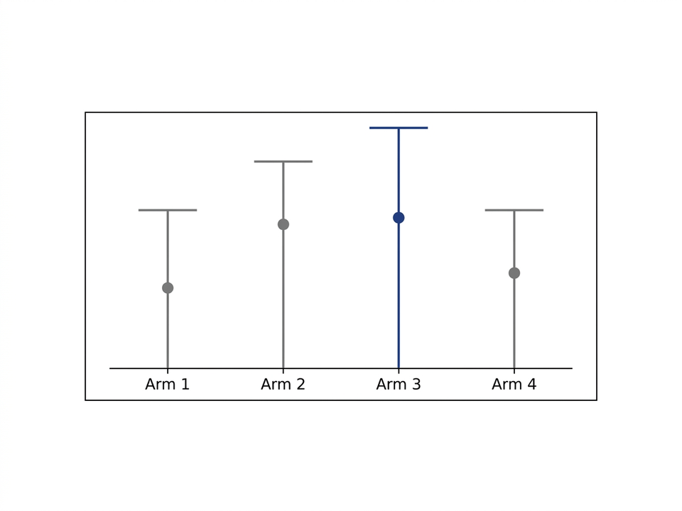
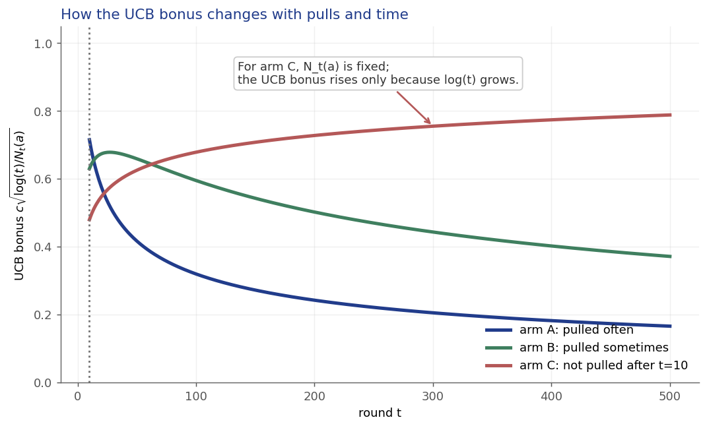
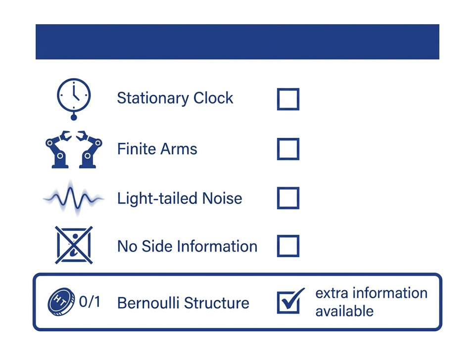
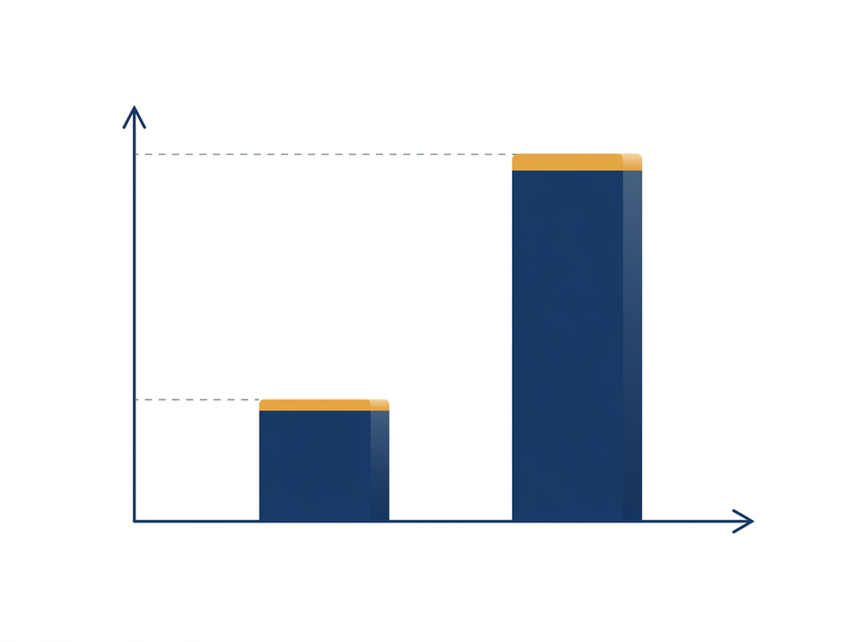
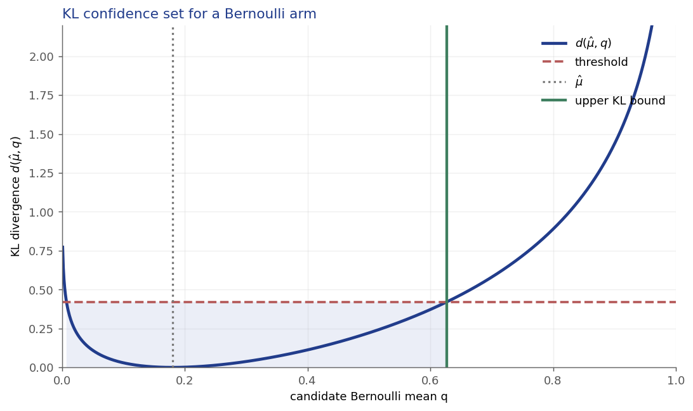
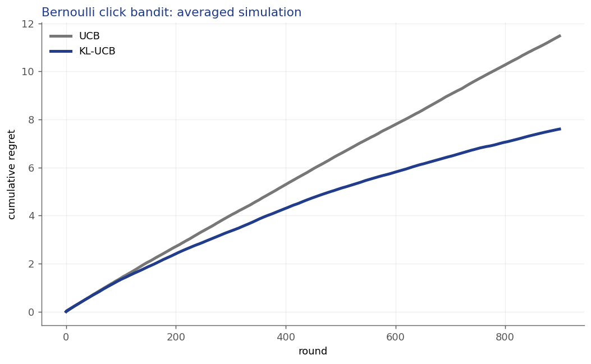
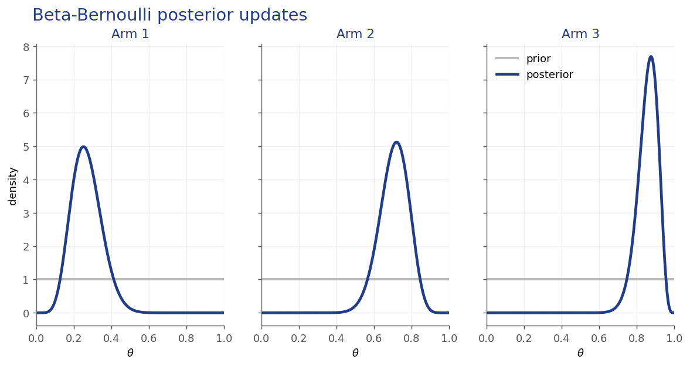
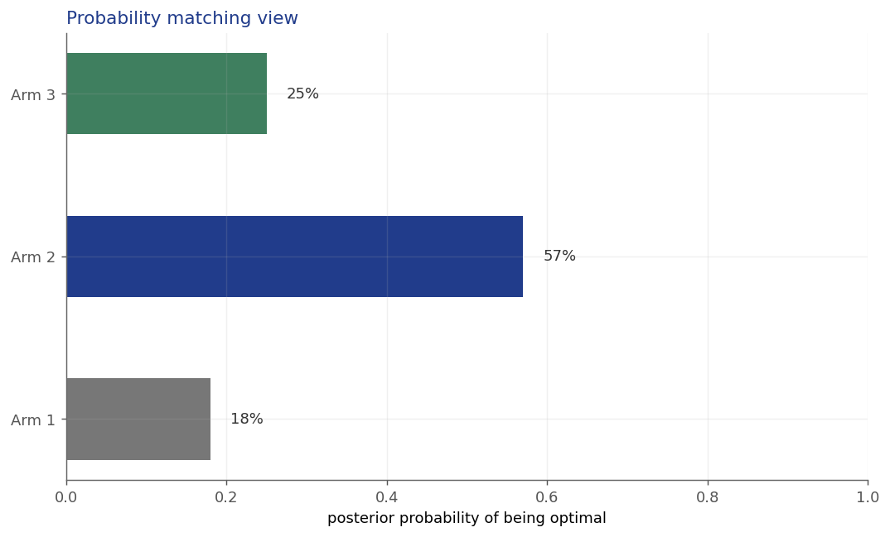
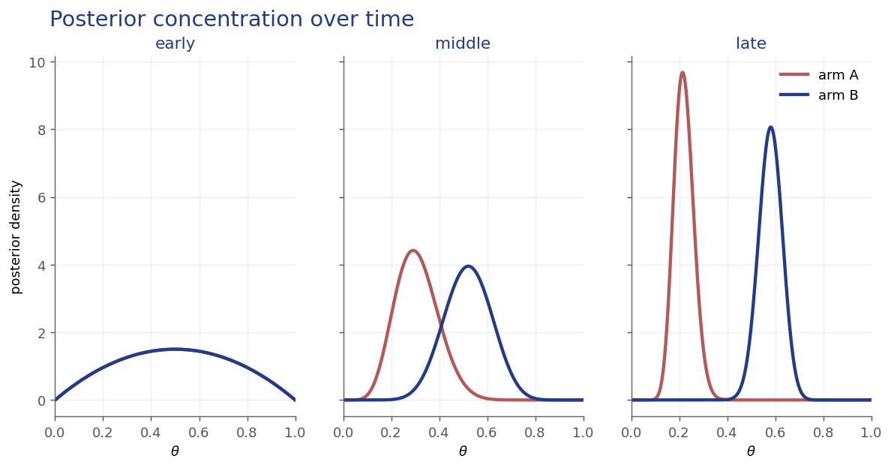

- Part A — From uniform exploration to optimism
- Part B — UCB indices and regret intuition
- Part C — KL-UCB for Bernoulli rewards
- Part D — Thompson Sampling and posterior probability matching
- Part E — Practical comparison and deployment choices
Lecture material: buntyke.github.io/rlcourse-mtech-fall26
The content of this lecture is based on:
- Chapter 2 of Reinforcement Learning: An Introduction (2nd ed.) by Sutton & Barto
- Chapters 7, 10, and 36 of Bandit Algorithms by Lattimore & Szepesvári (free at banditalgs.com)
Lecture material: buntyke.github.io/rlcourse-mtech-fall26
- Lecture 3 introduced estimates \(Q_t(a)\), counts \(N_t(a)\), gaps \(\Delta_a\), and regret.
- The closing message: reward assumptions determine confidence statements.
- Today replaces uniform random exploration with uncertainty-driven exploration.
\(\mathrm{Reg}(n)=\sum_a \Delta_a\,\mathbb{E}[T_a(n)]\)

- Exploration happens with a fixed probability \(\epsilon\).
- During exploration, current estimates and uncertainty are ignored.
- Regret is driven by how often suboptimal arms are pulled.
\(\mathrm{Reg}(n)=\sum_a \Delta_a\,\mathbb{E}[T_a(n)]\)

- Act as if each arm is as good as is still statistically plausible.
- An uncertain arm receives an optimism bonus.
- A well-sampled arm must earn its place through a high empirical mean.
\(\text{index}_t(a)=Q_t(a)+\text{bonus}_t(a)\)

- Lecture 3 introduced subgaussian concentration for sample means.
- For 1-subgaussian rewards, uncertainty shrinks like \(1/\sqrt{n}\).
- This confidence width becomes the exploration bonus.
\(\mathbb{P}\!\left(\mu \ge \hat{\mu}+\sqrt{\frac{2\log(1/\delta)}{n}}\right)\le \delta\)
\(\delta \downarrow \Rightarrow \log(1/\delta)\uparrow\)
\(n \uparrow \Rightarrow \sqrt{\frac{2\log(1/\delta)}{n}}\downarrow\)
- More confidence requires wider intervals.
- More samples make the same confidence cheaper.
\(A_t \doteq \operatorname*{arg\,max}_a\left[Q_t(a)+c\sqrt{\frac{\ln t}{N_t(a)}}\right]\)
\(\text{index}_t(a)=Q_t(a)+\sqrt{\frac{2\log(1/\delta)}{N_t(a)}}\)
- \(Q_t(a)\) estimates the true value \(q_*(a)\) from Lecture 3.
- The bonus is large when \(N_t(a)\) is small.
- Highest empirical mean
- Lowest empirical mean
- Fewest pulls, all else equal
- Largest reward variance observed once
initialize: pull each arm once
for t = k+1, ..., n:
compute index_t(a) = Q_t(a) + bonus_t(a)
A_t = argmax_a index_t(a)
observe reward X_t
update only Q_t(A_t) and N_t(A_t)| arm | pulls | mean | bonus | index |
|---|---|---|---|---|
| 1 | 40 | 0.52 | 0.31 | 0.83 |
| 2 | 8 | 0.47 | 0.69 | 1.16 |
| 3 | 32 | 0.61 | 0.35 | 0.96 |
- Pulling an arm increases its count and reduces its own bonus.
- If an arm is ignored, \(N_t(a)\) is fixed but \(\ln t\) still grows.
- So the UCB bonus rises slowly for neglected arms; the underlying sample uncertainty has not changed.
\(\mathrm{bonus}_a(t)=c\sqrt{\ln(t)/N_t(a)}\)

- Regret is controlled by bounding pulls of each suboptimal arm.
- A suboptimal arm is selected only while its upper bound can still beat the optimal arm.
- Once enough data lowers that upper bound, the arm is rarely revisited.
\(Q_t(a)+c\sqrt{\frac{\ln t}{N_t(a)}} \gtrsim Q_t(a^*)+c\sqrt{\frac{\ln t}{N_t(a^*)}}\)
and with enough pulls, \(Q_t(a^*)\approx q_*(a^*)\).
\(\mathrm{Reg}(n) \le 3\sum_a\Delta_a+\sum_{a:\Delta_a>0}\frac{16\log n}{\Delta_a}\)
- Logarithmic regret on fixed-gap, 1-subgaussian instances.
- Smaller gaps are harder: the bound worsens as \(\Delta_a\to 0\).
- The algorithm does not need to know the gaps in advance.
\(Q_t(a)+c\sqrt{\frac{\ln t}{N_t(a)}}\)
\(Q_t(a)+\sqrt{\frac{2\log(1/\delta)}{N_t(a)}}\)
- Larger \(c\) or smaller \(\delta\) means wider confidence intervals.
- Too small: premature exploitation.
- Too large: exploration continues after the evidence is already clear.
- Stops exploration immediately
- Over-explores arms already likely bad
- Makes rewards deterministic
- Removes the need for counts
- Designed for stationary stochastic rewards with tail control.
- Awkward with nonstationarity, large state spaces, or function approximation.
- It ignores extra structure in Bernoulli rewards.

- Bernoulli rewards are \(X_t\in\{0,1\}\); the mean is a success probability.
- They are \(1/2\)-subgaussian, so plain UCB applies.
- But variance \(\mu(1-\mu)\) is smaller near 0 or 1.
\(X_t\sim\mathrm{Bernoulli}(\mu_{A_t})\), \(\quad \mathrm{Var}(X_t)=\mu(1-\mu)\)

\(d(p,q)=p\log\frac{p}{q}+(1-p)\log\frac{1-p}{1-q}\)
- KL-UCB measures plausible alternative Bernoulli means with this divergence.
- The divergence is asymmetric and depends on the empirical mean.
- Boundary cases \(p=0\) or \(p=1\) need implementation conventions.
- Euclidean distance between arms
- Cost of treating observed Bernoulli mean \(Q_t(a)\) as candidate mean \(q\)
- The reward gap \(\Delta\)
- The number of failed pulls
\(A_t=\operatorname*{arg\,max}_a\max\left\{q\in[0,1]:d(Q_t(a),q)\le \frac{\log f(t)}{N_t(a)}\right\}\)
Typical choice: \(f(t)=1+t\log^2(t)\)
- The optimism principle is unchanged.
- The confidence set is Bernoulli-specific.

- No closed-form inverse is needed.
- For Bernoulli means, binary search over \(q\in[Q_t(a),1]\) is enough.
- The selected index is the largest feasible \(q\).
\(\limsup_{n\to\infty}\frac{\mathrm{Reg}(n)}{\log n}\le \sum_{a:\Delta_a>0}\frac{\Delta_a}{d(q_*(a),q_*(a^*))}\)
Near \(q_*(a)\): \(\quad d(q_*(a),q_*(a^*))\approx \frac{\Delta_a^2}{2q_*(a)(1-q_*(a))}\)
- Two-arm Bernoulli bandit with click probabilities \(0.05\) and \(0.08\).
- Plain UCB uses generic uncertainty.
- KL-UCB rejects implausible Bernoulli alternatives more sharply near the boundary.

| UCB | choose the arm with the best optimistic upper bound |
|---|---|
| Thompson Sampling | sample a model from the posterior, then choose its best arm |
- Exploration happens automatically when the posterior is uncertain.
- The randomization is informed by data, not uniform guessing.
\(\theta_i\sim\mathrm{Beta}(\alpha_i,\beta_i)\)
After \(x\in\{0,1\}\):
\(\alpha_i\leftarrow\alpha_i+x,\qquad \beta_i\leftarrow\beta_i+1-x\)

- \(\alpha\) behaves like prior successes plus observed successes.
- \(\beta\) behaves like prior failures plus observed failures.
- \(\mathrm{Beta}(1,1)\) is a common weak starting point.
for each arm i:
sample theta_i,t ~ Beta(alpha_i, beta_i)
A_t = argmax_i theta_i,t
observe X_t in {0, 1}
alpha_A = alpha_A + X_t
beta_A = beta_A + 1 - X_t- Maintain one posterior per arm in the independent Bernoulli model.
- Update only the selected arm.
\(\pi_t(a\mid H_{t-1})=\mathbb{P}_t\!\left(a=\operatorname*{arg\,max}_b\mu_b\right)\)
- Play arms according to posterior probability of being optimal.
- As posterior mass concentrates, the policy becomes increasingly greedy.

- Early posteriors are wide, so samples vary across arms.
- Rewards concentrate the posterior around plausible means.
- The probability of sampling a bad arm as best decreases with evidence.

| UCB | Thompson Sampling | |
|---|---|---|
| Mechanism | Optimistic upper bound | Sampled plausible world |
| Randomized? | No, after tie-breaking | Yes, through posterior samples |
| Exploration source | Confidence width | Posterior uncertainty |
- It flips an \(\epsilon\)-coin
- Uncertain posteriors sometimes sample as best
- It always pulls each arm equally
- It ignores observed rewards
\(\mathrm{BR}_n(\pi,Q)\le C\sqrt{k n\log n}\)
- Thompson Sampling has Bayesian and frequentist analyses.
- The displayed result is a Bayesian regret guarantee.
- For Bernoulli bandits, TS is also known for strong asymptotic behavior.
Historical note: Thompson Sampling dates to Thompson (1933), long before its modern popularity.
Weakly informative starting point for click/no-click rewards.
Can over-sample arms that the prior favors too much.
Can delay sampling an arm enough that correction is slow.
- A prior affects early exploration, especially when data is scarce.
- No pull means no data for that arm, so a bad prior can persist operationally.
| Setting | Algorithms | Metrics |
|---|---|---|
| Gaussian testbed | \(\epsilon\)-greedy, UCB | average reward, percent optimal action |
| Bernoulli click bandit | UCB, KL-UCB, Thompson Sampling | cumulative regret, pull counts |
- Use the same reward means and random seeds across algorithms.
- Average over many runs before interpreting a curve.
- Explain results through each algorithm's exploration mechanism.
shown: 1200
clicks: 72
CTR: 0.060
shown: 680
clicks: 52
CTR: 0.076
shown: 260
clicks: 24
CTR: 0.092
- Arms are recommendation variants; reward is click/no-click.
- UCB is a robust generic baseline.
- KL-UCB exploits Bernoulli structure; Thompson Sampling is simple with Beta updates.
| Use when... | Natural choice |
|---|---|
| Rewards are reasonably subgaussian and a deterministic index is desired | UCB |
| Rewards are Bernoulli and the Bernoulli model is credible | KL-UCB |
| A posterior model is natural and randomized probability matching is acceptable | Thompson Sampling |
The choice is about assumptions, implementation cost, and data regime, not a universal leaderboard.
- UCB: optimism using subgaussian confidence bounds.
- KL-UCB: optimism using Bernoulli KL confidence bounds.
- Thompson Sampling: posterior sampling and probability matching.
- Next: gradient bandits and contextual/associative search.
- An arm uniformly at random
- A reward from every arm's true distribution
- A plausible model or arm mean from the posterior
- The confidence parameter \(c\)